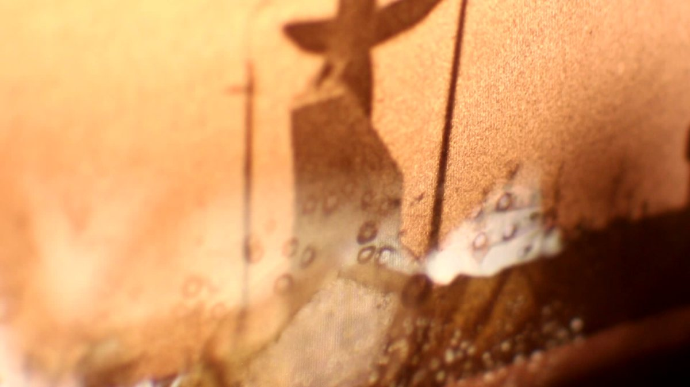

Music for Dysfunctional Airports
The airport, an ideograph of the modern age, becomes in its unused state an emblem for the crisis, failure and lack of economic and spiritual direction of our times.
The film approaches this from listening. How does an airport sound that is out of order? Which inner laws of space and time come from a place whose heart, the airline operations, never started beating? An early tape piece by Rinus van Alebeek on The Natural History Museum of Sound serves as the blueprint for sound and image.
In editing, the film goes through what musicians call feedback: digital HD images are re-recorded on film and re-digitized, and back again, a slow degradation between the digital and the analog.
Premiere Media Art Friesland / Noordelijk Film Festival, 5 to 9 November 2014
Release special edit on Super Sensor, e-magazine of experimental audio